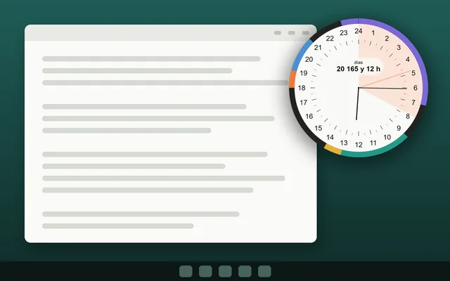

Windows
Un reloj de 24 horas en tu escritorio de Windows
Visdap mantiene todo tu día en una esfera redonda de 24 horas en una esquina de la pantalla: ves cuánto queda de un bloque de trabajo sin cambiar de ventana.
- Sin cuenta
- Sin anuncios ni rastreo
- Funciona sin conexión

Lo que tienes en Windows
Siempre a la vista
La esfera puede quedarse encima de otras ventanas. En modo fantasma, los clics la atraviesan hasta la ventana de abajo.
Tu tamaño y transparencia
Cualquier tamaño de 150 a 900 píxeles, con transparencia ajustable.
Captura rápida
Pulsa Ctrl+Mayús+Espacio para añadir una tarea desde cualquier app.
Recordatorios, Pomodoro y proyectos
Recordatorios con sonido, un temporizador Pomodoro y proyectos con franjas de plazo. Pomodoro y proyectos vienen con Pro.
Preguntas frecuentes
¿Qué versiones de Windows son compatibles?
Windows 10 (versión 1809 o posterior) y Windows 11.
¿Puede iniciarse con Windows?
Sí. Puedes activar el inicio con Windows en los ajustes.
¿Necesita internet?
No. Solo comprar o restaurar Pro necesita conexión con Microsoft Store.
Planifica hoy. Velo todo.
Instala Visdap y planifica tu primer día en un par de minutos. Empieza gratis.